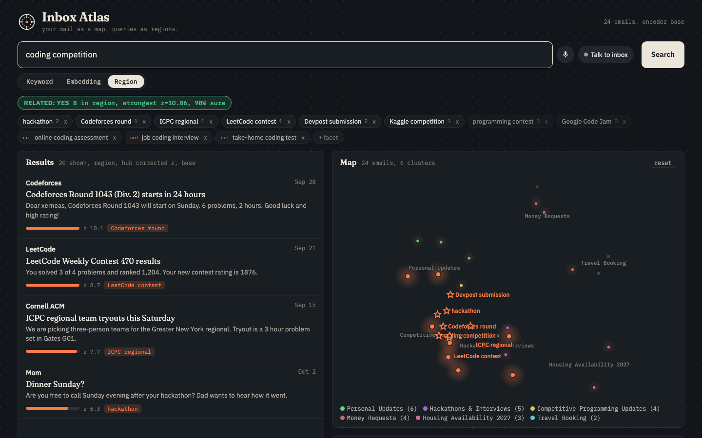
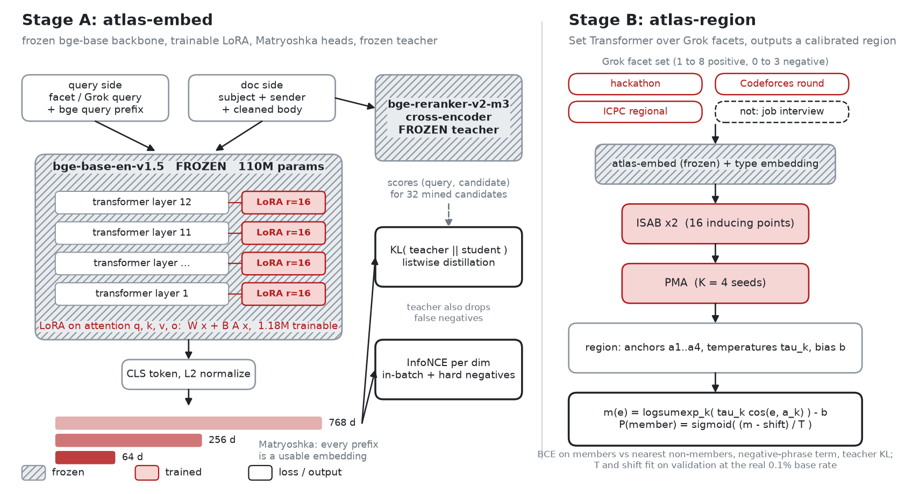

Your agents read 4,000 tokens to find one email. Inbox Atlas hands them the 250 that matter, or tells them nothing is there.
grep "competition"nothinggrep "contest"opens 6 filesgrep "hackathon"opens 9 morecat inbox/*.emlpastes them allKeyword search found nothing. Not wrong answers. Nothing.
Inbox Atlas found the right emails for all 12: Recall@10 0.867 vs 0.175, about five times the recall.
typed, spoken, texted, or called by an agent
in the words emails actually use, plus what to exclude
our encoder scores every email and note against it
only the sentences that answer, under a token budget
Keyword vs region on coding competition
, the facet chips, then yacht maintenance
: NO.
what do I have tomorrow?
then did anyone ask me for money?
what pulse widths did I use for the arm servos?
then did I book a yacht charter?
| What changes | Standard RAG | Inbox Atlas | Measured |
|---|---|---|---|
| Knows when nothing is there | Always returns k chunks, even for topics that do not exist | Calibrated yes or no; abstains and says stop searching | 31 vs 742tokens on absent topics |
| A question is a region | One query vector; the job test ranks first | Grok facets plus exclusions push the job test out | 7 vs 6of top 8 on topic |
| Sentences under a budget | Pastes 8 whole chunks | Keeps only the sentences that answer | 249 vs 740tokens at the same 75% accuracy |
| Folders first, then notes | Flat list of chunks across the vault | Finds the folder, then the note, then the line | 210tokens to the exact line |
| Encoder trained for mail | Off the shelf embeddings | Frozen bge + LoRA, distilled from a frozen teacher | 0.692 vs 0.635nDCG@10, vague queries |
"what pulse widths did I use for the arm servos?"
Folder first, then the note, then the exact line, in a nested markdown vault.
"did I book a yacht charter?" Nothing here. No grep loop. It just stops.

Facets you can edit, a yes or no, and the region glowing on your inbox.
Grok realtime voice, and hold to dictate anywhere with the "um, no wait" cleaned out.
Two-way on Photon: a morning brief, and alerts when mail lands in a topic you watch.

Facet writing, the tool-calling agent, speech to text and the realtime voice agent.
Postgres with a pgvector HNSW index, a TimescaleDB hypertable logging every query, and chat history.
The two-way iMessage agent: answers, morning brief and watch alerts.
One server for Cursor, Claude Code, Hermes and OpenClaw, over stdio or HTTP.
Built and routed with it. In our own testing outside this repo, Cursor CLI was the most token-efficient at routing compared with Claude Code, Codex and Grok.
Navigation used to mean maps.
Now it also means navigating what we and our agents know.